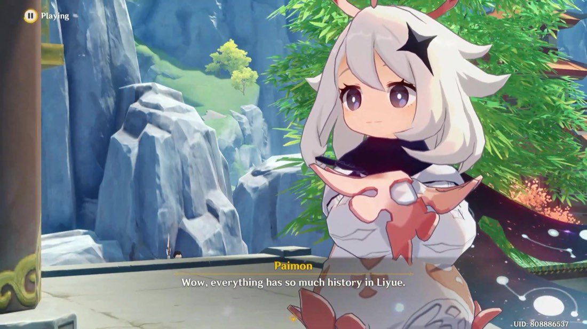

Paimon 0.16Real frame · real model output
You knew instantly. A computer does not — and teaching one costs thousands of examples that a person has labelled by hand. crowdmon makes those examples cheap: it turns recorded gameplay into frames, has a model guess at every one, and cuts the human job down to yes, no, or nudge.
How it works
From a link you paste to a dataset somebody could train on.
A worker pulls the video, slices ~2,700 stills, throws away the near-duplicates and keeps a random 200 spread across the timeline.
An open-vocabulary detector proposes a box for anything it takes for a character. It has never been shown these characters — it works from their names.
Accept, adjust, or reject. Seconds per frame instead of minutes. Verdicts are append-only and packaged into a snapshot with a train/test split.
Why it works
The 2023 version failed here. It had a perfectly good annotation tool where every box was drawn from scratch, so hour ten cost exactly what hour one cost. There is no finish line in a job shaped like that.
A bad guess is still useful. Rejecting one takes under a second, and a rejection is a label too. That is why the detector being weak is not a problem to be fixed before the rest can work.
So the model is the swappable part. It sits behind a one-method interface and can be replaced in a single file. The pipeline, the queue and the export around it are the thing that was built.
FAQ
No, and that is deliberate. It is a zero-shot bootstrap that has never seen these characters — confidences sit around 0.10–0.20 and plenty of its boxes are wrong, including one on this page. Accuracy is not the deliverable; throughput per human minute is.
No. Anonymous verdicts are recorded and tagged, then excluded when a snapshot is built. Admitting untrusted labels would force consensus resolution, agreement scoring and trust weighting — all deliberately out of scope.
Not by itself. A frame with no prediction never enters the queue, so a miss looks identical to an absence. Admins can file missing-object reports, and the report rate per class is the number that says whether a prompt is working.
Not yet. Training, a model registry and a distilled detector are all out of scope for now. What exists is the part that produces the data those would need.
Recognisable, consistently-rendered subjects and an endless supply of source video, which makes it a good harness for the pipeline. The frames are game screenshots and the dataset is not distributed as a product.
One real frame, the detector's real output, three buttons. About ten seconds, no account.